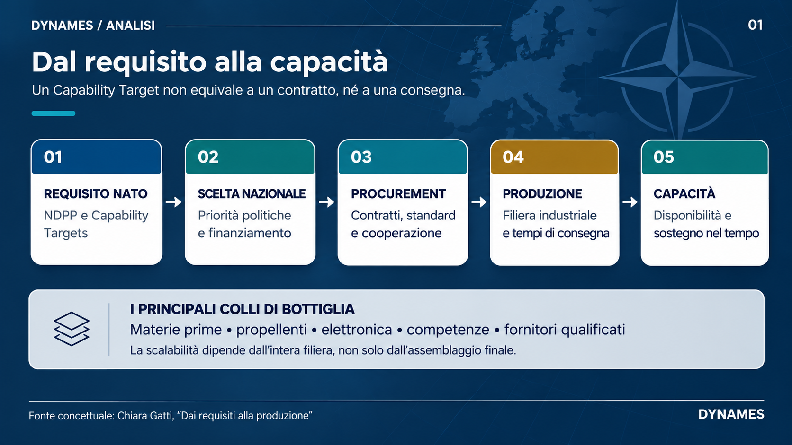
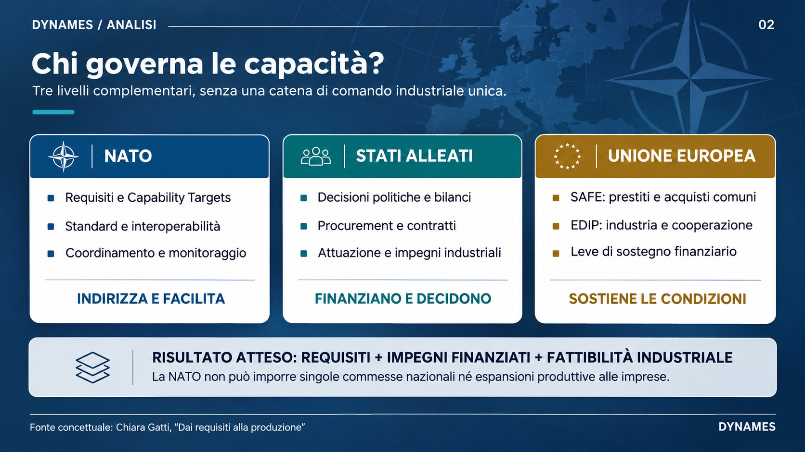
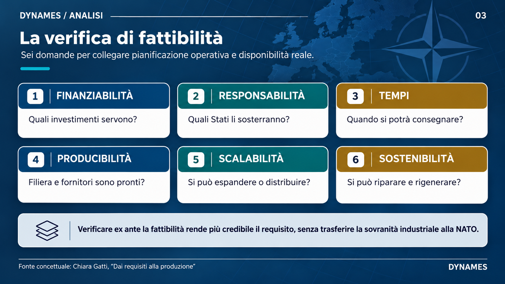

DYNAMES
DYNAMESIl dibattito pubblico sul riarmo si concentra soprattutto sulle cifre: quanto si spende, quale quota del PIL, entro quale anno. Al vertice dell’Aia del 2025, gli Alleati si sono impegnati a portare entro il 2035 gli investimenti annuali in difesa e sicurezza al 5% del PIL: almeno il 3,5% per i requisiti di difesa e fino all’1,5% per spese più ampie legate alla sicurezza, comprese resilienza e base industriale. Ma una percentuale dice quanto si intende spendere, non che cosa si riuscirà a ottenere: più spesa non significa automaticamente più capacità, e la NATO riconosce che serve anche un’industria in grado di consegnare ciò che le forze alleate richiedono. Il nodo decisivo consiste, allora, nel capire come tradurre priorità militari condivise in commesse finanziate e capacità produttiva reale, in un sistema in cui le leve di bilancio e le scelte industriali restano in larga misura di competenza degli Stati.
Del resto, la capacità di assorbire e gestire le risorse conta almeno quanto l’entità degli stanziamenti. Uno studio su 22 Paesi NATO nel periodo 2004-2023 rileva una relazione asimmetrica tra agilità della governance e spesa per la difesa: un deterioramento della governance è associato a una riduzione della spesa più marcata rispetto all’aumento associato a un miglioramento equivalente. Il risultato riguarda la dinamica della spesa, non la trasformazione dei fondi in contratti o capacità produttiva; indica però che gli obiettivi di bilancio dipendono anche da procedure amministrative e responsabilità efficaci.
Una capacità militare non nasce nel momento in cui viene individuata come requisito operativo: tra il fabbisogno dei pianificatori e la disponibilità di un sistema si collocano scelte politiche, bilanci, procedure di acquisizione, vincoli industriali e tempi di produzione. La base industriale della difesa non comprende soltanto gli stabilimenti: include imprese, lavoratori e catene di fornitura necessarie per costruire, riparare e aggiornare i sistemi. I vincoli più stringenti non stanno sempre negli stabilimenti di assemblaggio finale, ma più a monte: materie prime critiche, energetici e propellenti, componentistica elettronica, manodopera specializzata e tempi di qualificazione dei fornitori possono limitare la scala produttiva più della capacità delle linee finali. È lungo queste catene di fornitura che si apre la vera distanza tra ciò che l’Alleanza considera necessario e ciò che le forze alleate riescono effettivamente a schierare e sostenere. I tempi lunghi tra fabbisogno e consegna sono emersi con evidenza dopo il 2022 nel caso delle munizioni di artiglieria, dove l’aumento improvviso della domanda ha richiesto anni per tradursi in capacità produttiva aggiuntiva.

Obiettivi comuni e attuazione nazionale
Il NATO Defence Planning Process (NDPP) è il quadro attraverso cui l’Alleanza individua le capacità necessarie e assegna agli Alleati specifici Capability Targets. Il processo coordina la pianificazione NATO con quella nazionale e valuta periodicamente i progressi, senza compromettere la sovranità degli Alleati.
Un obiettivo condiviso, tuttavia, non è di per sé un programma finanziato né una linea produttiva avviata. I Capability Targets indicano le capacità da sviluppare, ma non generano automaticamente un contratto, non selezionano un fornitore e non stabiliscono da soli i tempi di consegna. L’articolo 3 del Trattato Nord Atlantico impegna gli Alleati a mantenere e sviluppare, separatamente e congiuntamente, la capacità di resistere a un attacco armato, rimettendo l’attuazione di tale obbligo alla responsabilità dei singoli governi: la pianificazione collettiva dell’NDPP orienta dunque gli sforzi nazionali, ma non costituisce una catena di comando NATO sulle politiche industriali degli Stati.
La traduzione di un obiettivo in un acquisto comporta scelte politiche oltre che tecniche. Tempi di consegna, costi, interoperabilità, sicurezza delle forniture e ritorni industriali possono pesare in modo diverso da Paese a Paese. La convergenza sulle esigenze non elimina la competizione tra priorità nazionali né le divergenze sull’urgenza e sulla destinazione degli investimenti. Quando la cooperazione riguarda anche sviluppo, produzione e sostegno congiunti, contano inoltre la fiducia tra i partner e la compatibilità dei rispettivi quadri regolatori. L’interoperabilità richiede standard comuni e gli accordi di standardizzazione NATO (STANAG) sono uno degli strumenti con cui gli Alleati li definiscono e li adottano. Se i requisiti nazionali divergono, la produzione distribuita e le commesse comuni diventano più difficili. Pesano altrettanto le regole su trasferimenti di tecnologia, diritti sui dati e controlli sulle esportazioni, che nei programmi multinazionali possono bloccare la cooperazione quanto la mancanza di fondi. Per questo un requisito comune non produce automaticamente un ordine comune.
Il rapporto tra pianificazione e industria, inoltre, non è a senso unico. I requisiti orientano la domanda, ma le capacità produttive disponibili condizionano quali soluzioni possono essere realizzate, mantenute e consegnate nei tempi previsti. Di conseguenza, la base industriale può incidere anche sulle opzioni operative concretamente perseguibili.
Questo non significa che la NATO sia priva di strumenti per incidere sul contesto industriale. Può definire requisiti e standard, riunire governi e industria, favorire l’aggregazione della domanda e monitorare le carenze produttive. Il Defence Production Action Plan aggiornato nel 2025 punta, tra l’altro, a promuovere contratti multinazionali e pluriennali e a migliorare la visibilità sulle capacità industriali. Per tradurre queste iniziative in acquisti e investimenti, tuttavia, servono misure e partecipazione degli Alleati: il Piano coordina e facilita, ma non sostituisce le decisioni nazionali di spesa e procurement.
La NATO può quindi rendere più chiara la domanda comune e monitorare i progressi, ma non può imporre a un governo una commessa nazionale né ordinare a un’impresa di espandere la produzione. Il suo ruolo è di indirizzo, coordinamento e sostegno alla cooperazione, mentre la decisione di finanziare e realizzare molti degli obiettivi resta agli Stati.
Dalla cooperazione NATO agli strumenti europei
La NATO dispone anche di strumenti per sostenere acquisizioni e gestione multinazionali. Gli High Visibility Projects partono da carenze riconosciute dagli Alleati e riuniscono i Paesi che scelgono di cooperare. L’attuazione può essere facilitata dallo staff NATO, da un’agenzia come la NATO Support and Procurement Agency (NSPA), da un altro ente o da una nazione guida, e gli impegni dei partecipanti sono definiti attraverso accordi dedicati.
La NSPA offre servizi di acquisizione, supporto logistico e gestione di equipaggiamenti e sistemi lungo il ciclo di vita, fino al ritiro. Rappresenta uno strumento operativo per la gestione di programmi multinazionali, non una cabina di regia generale sull’industria alleata.
La Multinational Multi-Role Tanker Transport Fleet (MMF) mostra come funziona questo modello. Otto Paesi hanno messo in comune risorse e costi per una flotta gestita dalla NSPA, utilizzabile per trasporto strategico, rifornimento in volo ed evacuazione medica. È un esempio concreto di acquisizione e gestione condivise, rese possibili dall’accordo dei governi partecipanti. Non conferisce però all’Alleanza un’autorità generale sulla produzione dei Paesi che non aderiscono al programma.
Il raccordo con l’Unione Europea amplia gli strumenti disponibili, ma non sostituisce le decisioni nazionali né il ruolo della NATO. L’Alleanza contribuisce a definire priorità e requisiti militari comuni; l’UE può intervenire sulle condizioni industriali e finanziarie attraverso misure di sostegno alla produzione e agli acquisti comuni.
Il Security Action for Europe (SAFE) mette a disposizione prestiti per investimenti nella difesa e favorisce il procurement comune; l’European Defence Industry Programme (EDIP) sostiene la capacità produttiva europea e gli acquisti congiunti. Questi strumenti possono rendere più praticabile la cooperazione, ma non trasformano automaticamente un Capability Target NATO in una commessa: adesione, finanziamento e attuazione restano legati alle scelte degli Stati. Gli Stati membri hanno infatti risposto in modo differenziato tanto alla strategia industriale (EDIS) quanto allo stesso EDIP, dando luogo a negoziati intergovernativi sul contenuto, sulla governance e sul finanziamento della nuova politica. Il punto politicamente più sensibile è il rapporto con i fornitori extra-UE, in particolare statunitensi: la preferenza europea nei criteri di accesso agli strumenti UE e l’esigenza di acquisire rapidamente sistemi già disponibili possono non coincidere con le priorità dei requisiti NATO, e la scelta tra le due logiche resta una decisione politica degli Stati. Il raccordo da costruire è dunque tra requisiti NATO, decisioni nazionali di procurement e strumenti industriali e finanziari dell’UE.

Dalla dottrina alla fattibilità industriale
Olivier Schmitt, in “Speed without Endurance: Why NATO’s Multi-Domain Operations Concept Needs an Economic Warfare Doctrine”, pubblicato dal NATO Defense College, propone di integrare più esplicitamente la guerra economica nella dottrina e nella pianificazione NATO. La proposta richiama l’importanza della sostenibilità economica e materiale delle operazioni. Una revisione dottrinale, tuttavia, non risolve da sola il problema industriale: può orientare la pianificazione e rendere più visibili dipendenze e colli di bottiglia, ma non crea capacità produttiva, non stanzia fondi nazionali e non impone contratti comuni.
Per collegare meglio gli obiettivi alle capacità effettivamente disponibili, ogni requisito dovrebbe essere accompagnato da una verifica della sua realizzabilità: quali investimenti richiede, quali Stati intendono sostenerli, quali tempi di acquisizione e produzione sono plausibili e se sia opportuno ricorrere a un programma multinazionale o a strumenti europei. La verifica dovrebbe considerare non solo il volume producibile, ma anche la producibilità, il potenziale di produzione distribuita, la scalabilità, la riparabilità e la capacità di sostenere e rigenerare i sistemi nel tempo.

Un simile passaggio non trasferirebbe alla NATO il controllo delle industrie nazionali, ma renderebbe più trasparente il percorso tra requisito, impegno finanziato e consegna attesa. L’Alleanza può offrire il quadro comune, evidenziare le lacune e facilitare la cooperazione; gli Alleati devono decidere come finanziare e realizzare le soluzioni. Alla domanda del titolo si può quindi rispondere così: nessuno governa il passaggio in senso gerarchico. Lo governa una combinazione di tre livelli: le decisioni nazionali di bilancio e procurement; il coordinamento e gli standard della NATO; le leve finanziarie e industriali dell’UE. L’efficacia del passaggio dipende dalla coerenza tra questi livelli. La credibilità della pianificazione dipende anche dalla capacità di mostrare, fin dall’inizio, se e come un obiettivo operativo possa diventare una capacità effettivamente disponibile. Senza questa saldatura tra ambizione dottrinale e fattibilità industriale, la deterrenza stessa rischia di perdere la propria base materiale.